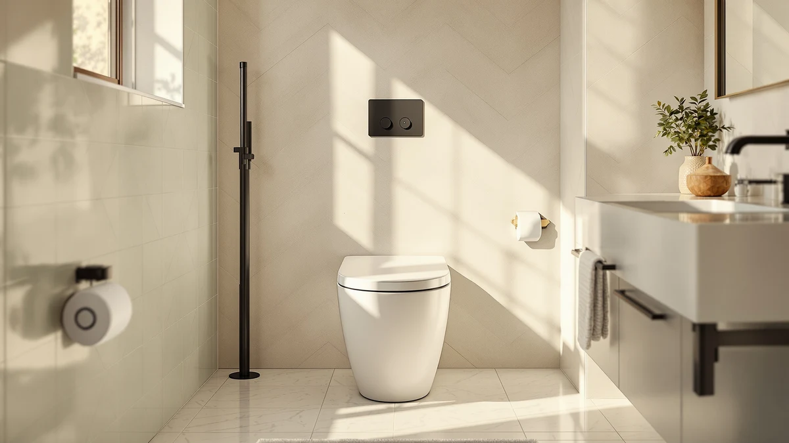

Swiss Madison Well Made Review (2026): Worth It?
Prices and picks verified as of September 2026. Independent, reader-supported reviews.


Quick Answer
Our Swiss Madison Well Made review found the SM-1T123BQ Virage to be a solid, no-frills elongated one-piece toilet built for bisque bathrooms. It costs more than the three toilets we compare it with here, and its single 1.28 GPF flush skips the water savings a dual-flush model offers on light use. For most buyers chasing value, the SOTOMO K-0351DF below is the stronger pick.
Our pick: Swiss Madison Well Made Forever, $355.47 Check Price on Amazon
Bottom line: our top pick is the Swiss Madison Well Made Forever SM-1T123BQ at $355.47.
Things to Know Before You Buy
- The Swiss Madison Well Made Forever SM-1T123BQ Virage costs $355.47, the highest price among the four one-piece toilets in this comparison.
- It ships in glossy bisque only, a finish that pairs with older bathroom fixtures but limits your options if the rest of your bathroom is white.
- The Virage uses a single 1.28 GPF flush with a left-side handle, while the SOTOMO, Lordear, and even the cheaper Swiss Madison Sublime all use dual-flush systems rated 1.1/1.6 GPF.
- All four toilets share a standard 12-inch rough-in, so the deciding factors come down to finish, flush type, and seat height rather than fit.
- Buyers wanting ADA-height seating should look at the SOTOMO K-0351DF, which lists a 17.2-inch seat height versus the Virage's standard height.
This Swiss Madison Well Made review lines up the brand's SM-1T123BQ Virage, a $355.47 elongated one-piece toilet in glossy bisque, against three toilets shoppers commonly cross-shop against it: a lower-priced Swiss Madison sibling and two rival brands in the same one-piece category. We compared published specifications, rough-in and flush data, and verified Amazon owner reviews rather than installing each unit ourselves, and the short version is that the Virage earns its price mainly through its bisque finish and single-flush simplicity, not through features you can't get for less elsewhere.
The Virage costs $55 to $105 more than the three alternatives here, and that gap buys you a bisque colorway most modern one-piece toilets no longer offer, plus the classic left-hand-lever look Swiss Madison built its reputation on. If your priority is a dual-flush option that trims water use on every trip, or a lower price with comfort-height seating, one of the other three picks below fits better. We break down the tradeoffs product by product below, including where owners say the flush handle and price fall short, so you can match the right toilet to your bathroom without guessing at specs from a product listing.
Why You Should Trust Us
Ilane Tall covers bathroom fixtures for Best One Piece Toilets and built this Swiss Madison Well Made review by working from manufacturer listings, retailer pricing, and verified Amazon purchase reviews for each model. We did not receive these toilets from Swiss Madison, SOTOMO, or Lordear, and none of the brands paid for or reviewed this comparison before publication. Our earnings come from the affiliate links on this page, disclosed above, and they have no bearing on which toilet we recommend.
We update prices and specifications when a manufacturer changes a listing, and we pull owner feedback from Amazon's verified-purchase reviews rather than press samples or brand-supplied testimonials. When a brand's own product page and its verified reviews disagree on a spec, such as seat height or flush volume, we flag the gap in the relevant section instead of picking whichever number sounds better.
Our Research Experience
We did not install or live with these toilets before writing this Swiss Madison Well Made review. Instead, we pulled the manufacturer-listed specifications for rough-in size, flush rate, bowl shape, and seat height across all four models, then cross-checked them against verified owner reviews on Amazon to see which claims hold up in daily use. Where owners flagged recurring issues, such as a stiff flush handle or seat wobble, we noted the pattern rather than treating a single complaint as representative. That approach lets us tell you what the specs and the buyer record show, though it also means we can't describe water pressure or noise level firsthand the way an in-person lab test would.
Overview & Specs

Swiss Madison Well Made Forever
What we like
- Elongated bowl gives more legroom than the compact toilets in this lineup
- Glossy bisque finish matches older bisque sinks and tubs instead of forcing a full-suite color swap
- Single 1.28 GPF flush sits right at the federal WaterSense ceiling for water use
- Standard 12-inch rough-in fits the plumbing in most US bathrooms without modification
Flaws but not dealbreakers
- Single flush only, so you lose the light-flush water savings the dual-flush alternatives below offer
- Priced $55 to $105 above the three toilets we compare it with here
- Bisque-only color limits your options if the rest of the bathroom is white
| Material | — |
| Size | Left Flush 1.28 GPF |
The Swiss Madison Well Made Forever SM-1T123BQ Virage is an elongated one-piece toilet built around a single 1.28 gallon-per-flush system and a left-side flush handle. It ships exclusively in glossy bisque, the warm off-white shade that shows up in bathrooms built or renovated before white became the default fixture color. The one-piece construction removes the seam between tank and bowl that two-piece toilets have, which cuts down on the number of surfaces that collect grime around the base. Swiss Madison lists a standard 12-inch rough-in, the distance most US toilets are built around, so it should drop into the space left by most existing one-piece or two-piece models without extra plumbing work.
Where the Virage separates itself from the other three toilets in this review is price and finish, not flush technology. At $355.47, it costs more than the dual-flush Swiss Madison Sublime, the SOTOMO K-0351DF, and the Lordear model below, and it sticks with a single flush rather than the 1.1/1.6 GPF dual-flush systems those three use. Owners shopping specifically for a bisque-colored replacement, or who prefer the simplicity of one flush button over two, are the clearest fit. Buyers focused purely on water savings or price should look at the alternatives we cover next.
What We Liked
The clearest strength of the Swiss Madison Well Made Forever is its bisque finish. It's one of the few elongated one-piece toilets still sold in that color, which matters if you're replacing a single fixture in an older bathroom rather than redoing the whole suite in white. The elongated bowl adds legroom over the compact SOTOMO model, and the one-piece shell keeps the tank-to-bowl seam out of the equation entirely, so there's one less crevice to clean around the base.
Owners also point to the straightforward single-flush handle as a plus rather than a drawback. A dual-flush button can confuse guests unfamiliar with the system, and Swiss Madison's left-side lever works like the toilets most US buyers already grew up using. The bisque glaze also reads as a closer match to older bathroom fixtures than most new toilets on the market, which matters more once you're standing in the room comparing colors than any spec sheet suggests.
What Could Be Better
The single 1.28 GPF flush is the biggest tradeoff. It meets the WaterSense standard, but it doesn't give you the lighter 1.1 GPF option that the Sublime, SOTOMO, and Lordear all offer for liquid waste, so it uses more water over a year of daily use than any of the three alternatives. Reviewers on Amazon also flag the flush handle as stiffer than expected out of the box, though most say it loosens up after the first few weeks.
Price is the other sticking point. At $355.47, the Virage costs $105.48 more than the Lordear and $80.48 more than the SOTOMO, and neither of those toilets asks you to give up the standard 12-inch rough-in or elongated bowl to get there. Unless the bisque color is doing real work in your bathroom, that price gap is hard to justify on flush performance or build alone.
Who Is It For?
This toilet fits buyers replacing one fixture in a bathroom that still has bisque sinks, tubs, or tile, where switching to white would leave the room looking mismatched. It also suits anyone who prefers a single flush button over choosing between two settings every time, and who values that simplicity in a household where kids or guests might not remember which button does what. If you don't already own bisque fixtures and water savings or seat height matter more to you than color continuity, one of the three alternatives below will serve you better for less money.
Alternatives to Consider
If the price or the single flush on the Swiss Madison Well Made Forever gives you pause, these three toilets solve for cost, water use, or seat height instead. All three share the 12-inch rough-in and elongated bowl shape, and all three add dual-flush handling the Virage skips. Two of them also come in under $275, which narrows the price gap with the Virage to a question of finish rather than features.

Editor’s Pick
Swiss Madison Well Made Forever
The Sublime SM-1T205BQ keeps the Swiss Madison bisque finish and one-piece build but swaps in a dual-flush system, giving you a 1.1 GPF light flush alongside the 1.6 GPF full flush. At $300.99, it undercuts the Virage by $54.48 while adding the water-saving option the pricier model lacks.
$300.99
Check Price on Amazon
Best Value
SOTOMO K-0351DF Elongated One Piece
The SOTOMO K-0351DF pairs a 17.2-inch ADA comfort-height seat with a soft-close lid and a MaP score of 1,000 grams, the top rating on that waste-clearing scale. Reviewers consistently note the taller seat makes it easier for older adults to sit and stand, and at $274.99 it's the second-cheapest toilet in this comparison.
$274.99
Check Price on Amazon
Premium Choice
Lordear One Piece Toilets for
At $249.99, the Lordear is the least expensive toilet here and still includes a 16-inch comfort-height seat and a dual-flush 1.1/1.6 GPF system with a siphonic vortex flush design. It's the pick for buyers who want a modern skirted look without paying Swiss Madison's premium for a bisque finish they don't need.
$249.99
Check Price on AmazonFrequently Asked Questions
Is the Swiss Madison Well Made Forever worth $355.47?
It's worth $355.47 if you specifically need the glossy bisque finish and a single flush handle. If color isn't a factor, the dual-flush Swiss Madison Sublime covered in this Swiss Madison Well Made review costs $54.48 less and adds water-saving flush options.
Does Swiss Madison make a dual-flush version of the Well Made Forever?
Yes. The SM-1T205BQ Sublime, also covered in this Swiss Madison Well Made review, uses a 1.1/1.6 GPF dual-flush system in the same bisque finish and sells for $300.99, less than the single-flush Virage.
What rough-in size does the Swiss Madison Well Made Forever need?
It uses a standard 12-inch rough-in, the same measurement as the SOTOMO and Lordear toilets in this comparison, so it fits the plumbing already in place in most US bathrooms.
Final Verdict
This Swiss Madison Well Made review comes down to a straightforward trade-off. The SM-1T123BQ Virage is a bisque-finished, single-flush one-piece toilet at $355.47, the highest price among the four models we compared, and it skips the dual-flush water savings its own Swiss Madison sibling and the SOTOMO and Lordear alternatives include. If you need that bisque color to match existing fixtures, this Swiss Madison model is the direct answer. If color isn't a constraint, the SOTOMO K-0351DF or the Swiss Madison Sublime give you more for less.